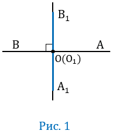
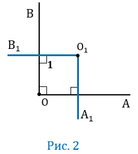
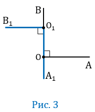
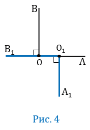
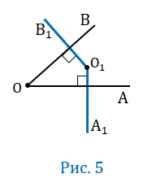
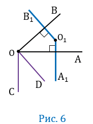
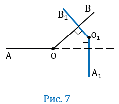
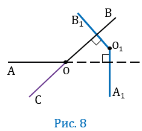

Теорема
Если стороны одного угла соответственно перпендикулярны сторонам другого угла, то такие углы или равны, или в сумме составляют 1800.Дано: ∠АОВ, ∠А1О1В1, ОА ⏊О1А1, ОВ ⏊О1В1.
Доказать: ∠АОВ = ∠А1О1В1 или ∠АОВ + ∠А1О1В1 = 1800.
Доказательство:
1 случай
Пусть угол АОВ - развернутый (Рис. 1).

Угол АОВ - развернутый, значит лучи ОА и ОВ будут лежать на одной прямой, при этом по условию ОА ⏊О1А1, ОВ ⏊О1В1, значит, лучи О1А1 и О1В1 также будут лежать на одной прямой, следовательно, ∠А1О1В1 - будет развернутым, тогда ∠АОВ = ∠А1О1В1.
2 случай
Пусть угол АОВ - прямой, т.е. равен 900 (Рис.2).

∠АОВ = 900, то ОА ⏊ОВ, при этом по условию ОА ⏊О1А1, следовательно, ОВ ∥ О1А1. Итак, О1В1 - секущая относительно прямых ОВ и О1А1, ОВ ∥ О1А1, тогда по теореме об односторонних углах их сумма равна 1800, т.е. ∠1 + ∠А1О1В1 = 1800, откуда ∠А1О1В1 = 1800 -∠1, при этом по условию ОВ ⏊О1В1, значит ∠1 - прямой, т.е. ∠1 = 900, следовательно, ∠А1О1В1 = 1800 - 900 = 900. Из равенств ∠АОВ = 900 и ∠А1О1В1 = 900 следует, что ∠АОВ = ∠А1О1В1 и ∠АОВ + ∠А1О1В1 = 900 + 900 = 1800.
3 случай
Пусть О∈О1А1 (Рис.3).

По условию О∈О1А1, тогда лучи ОВ и О1А1 будут лежать на одной прямой А1В. По условию ОА⏊О1А1, ОВ⏊О1В1, значит, ОА и О1В1 будут перпендикулярны одной прямой А1В, следовательно, ОА ∥ О1В1. Итак, ОА ∥ О1В1, А1В - секущая относительно прямых ОА и О1В1, тогда по теореме о накрест лежащих углах ∠АОВ = ∠А1О1В1, причем, учитывая то, что ОА<⏊О1А1, ОВ⏊О1В1 эти углы будут прямые, т.е. ∠АОВ =∠А1О1В1 = 900, тогда ∠АОВ + ∠А1О1В1 = 900 + 900 = 1800.
4 случай
Пусть О∈О1В1 (Рис.4).

По условию О∈О1В1, тогда лучи ОА и О1В1 будут лежать на одной прямой В1А. По условию ОА⏊О1А1, ОВ⏊О1В1, значит ОВ и О1А1 будут перпендикулярны одной прямой В1А, следовательно, ОВ ∥ О1А1. Итак, ОВ ∥ О1А1, В1А - секущая относительно прямых ОВ и О1А1, тогда по теореме о накрест лежащих углах ∠АОВ = ∠А1О1В1, причем, учитывая то, чтоОА⏊О1А1, ОВ⏊О1В1 эти углы будут прямые, т.е. ∠АОВ = ∠А1О1В1 = 900, тогда ∠АОВ + ∠А1О1В1 = 900 + 900 = 1800.
5 случай
Пусть угол АОВ - острый, т.е. меньше 900, при этом О∉О1А1, О∉О1В1 (Рис.5).

Проведем луч ОС так, чтобы прямые ОА и ОС были взаимно перпендикулярными (т.е. ОА⏊ОС), а точки В и С лежали по разные стороны от прямой ОА. Далее проведем луч ОD так, чтобы прямые ОВ и ОD были взаимно перпендикулярными (т.е. ОВ⏊ОD), а точки С и D лежали по одну сторону от прямой ОА (Рис.6).

Получим, что ∠АОВ = 900 - ∠АОD, а ∠СОD = 900 - ∠АОD, значит ∠АОВ = ∠СОD. Стороны угла СОD соответственно параллельны сторонам угла А1О1В1, т.е. ОС ∥ О1А1 (т.к. две прямые перпендикулярные к третьей прямой параллельны друг другу, по построению ОА⏊ОС и по условию ОА⏊О1А1), также ОD ∥ О1В1 (т.к. по построению ОВ⏊ОD и по условию ОВ⏊О1В1), поэтому по теореме об углах с соответственно параллельными сторонами либо ∠СОD = ∠А1О1В1, либо ∠СОD + <∠А1О1В1 = 1800. Следовательно, учитывая то, что ∠АОВ = ∠СОD получим, либо ∠АОВ = ∠А1О1В1, либо ∠АОВ +∠А1О1В1 = 1800.
6 случай
Пусть угол АОВ - тупой, т.е. меньше 1800, но больше 900, при этом О∉О1А1, О∉О1В1 (Рис.7).

Проведем луч ОС так, чтобы угол АОС был смежным с углом АОВ (Рис.8).

Угол АВС острый, и его стороны соответственно перпендикулярны сторонам угла А1О1В1. Следовательно, либо ∠АОС + ∠А1О1В1 = 1800, либо ∠ АОС = ∠А1О1В1 (смотри случай 5). Тогда, учитывая, что углы АОС и АОВ смежные, их сумма будет равна 1800, значит ∠АОС = 1800 - ∠АОВ, следовательно, в первом случае 1800 - ∠АОВ + ∠А1О1В1 = 1800, откуда ∠АОВ = ∠А1О1В1, а во втором случае 1800 - ∠АОВ = ∠А1О1В1, откуда ∠АОВ + ∠А1О1В1 = 1800.
Теорема доказана.